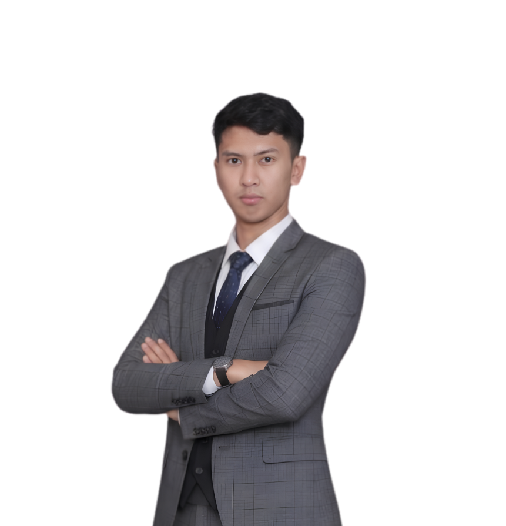
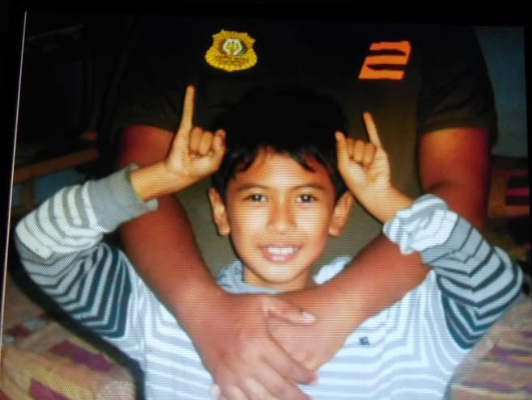
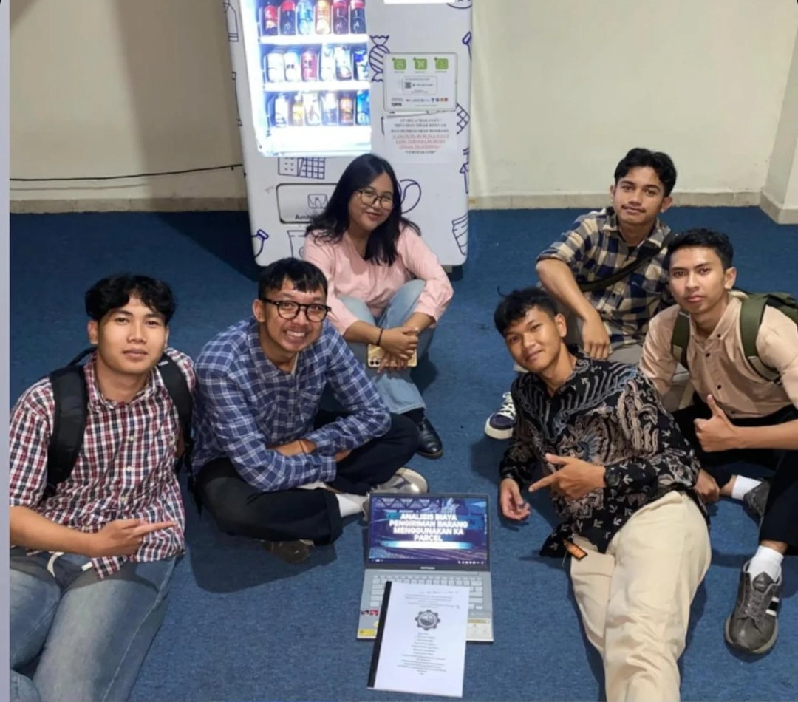
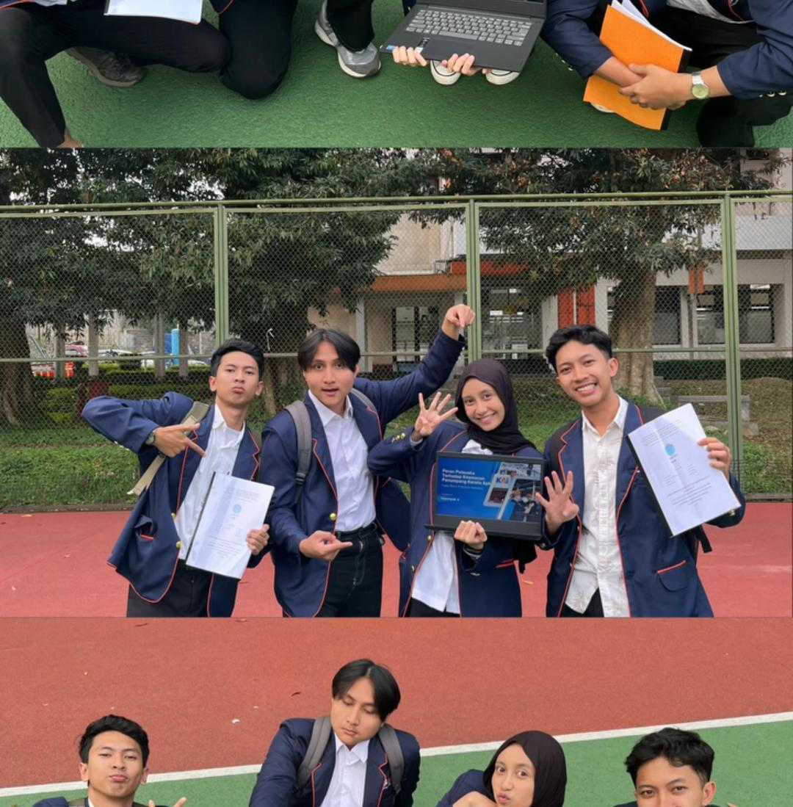
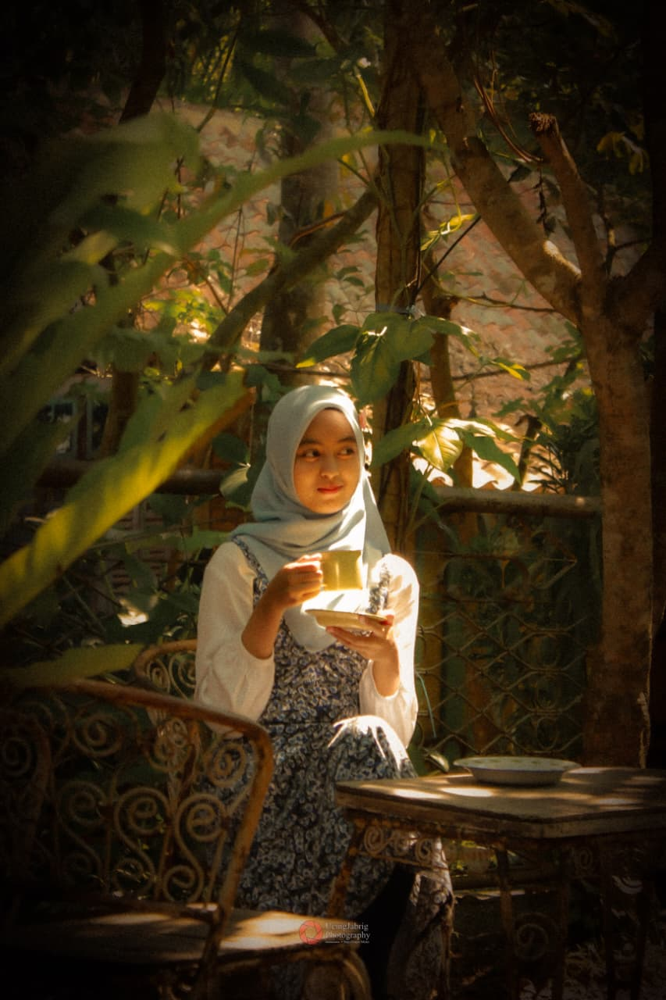
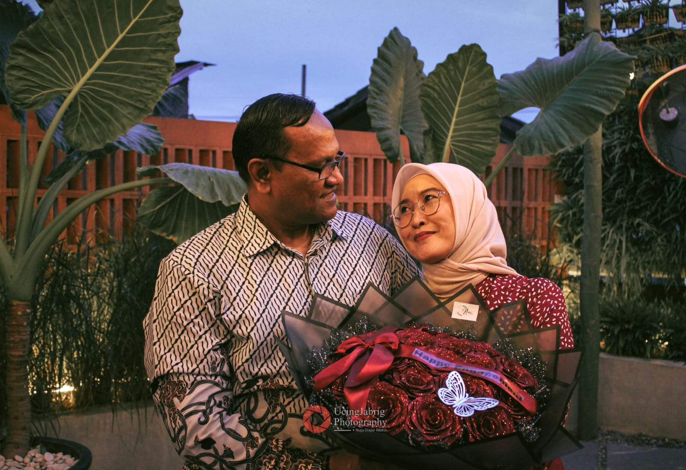
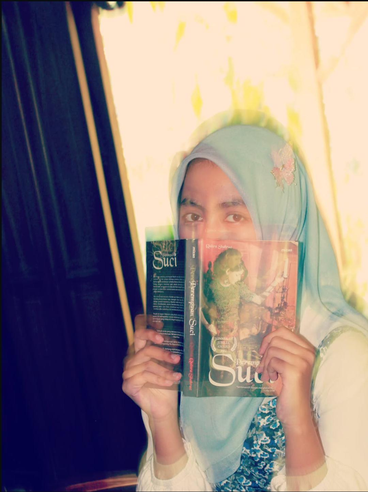
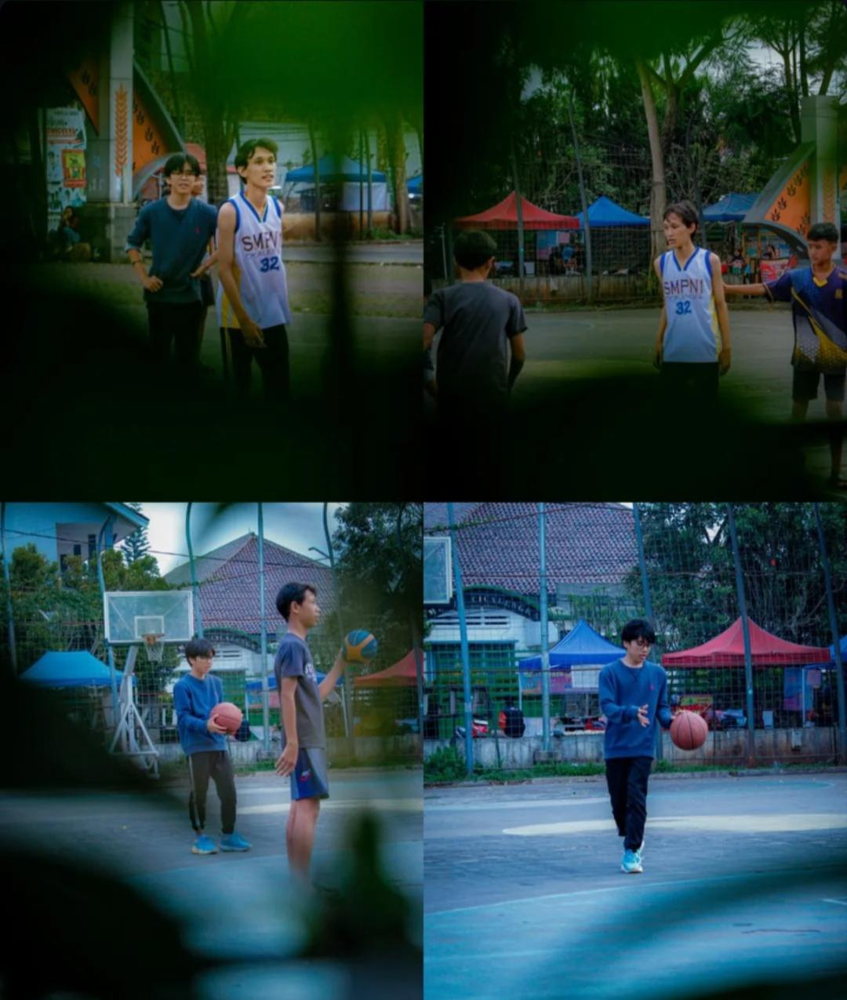
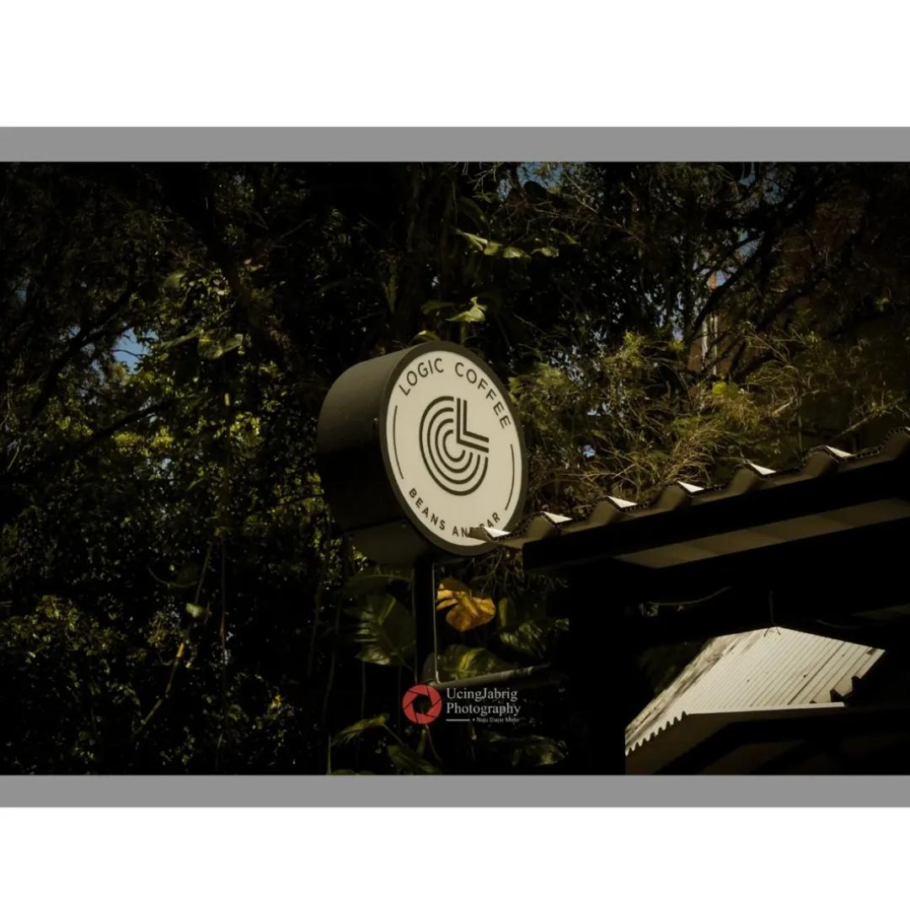

Perencanaan & optimasi Transportasi
Mendalami pemodelan jaringan transportasi, manajemen simpang, perencanaan sistem angkutan umum yang terintegrasi dan efisien, dan optimasi transportasi.
Transportation Management Student
Future Transportation Planner & Railways Enthusiast — Selamat datang di personal profile dari seorang mahasiswa manajemen transportasi yang berfokus pada perencanaan, keselamatan, serta optimasi sistem transportasi.


Saya Andika — mahasiswa Manajemen Transportasi yang percaya bahwa setiap perjalanan, sekecil apa pun, layak direncanakan dengan serius. Bagi saya, transportasi bukan sekadar memindahkan orang dari titik A ke titik B, melainkan tentang keselamatan, efisiensi, dan kualitas hidup yang dibawanya.
Saya lahir di Bandung, 11 Mei 2005, saya memulai kuliah di program studi Manajemen Tranportasi - Universitas Logistik dan Bisnis Internasional (2024) yang dimulai dari ketertarikan dan kecintaan terhadap dunia perkeretapaian, yang kemudian berkembang menjadi minat akademik serius pada perencanaan sistem transportasi, optimasi transportasi, keselamatan jalan, dan Sistem Operasi Kereta Api. Saat ini saya fokus memperdalam pemahaman tentang bagaimana data, kebijakan, dan rekayasa dapat dipadukan untuk menciptakan sistem transportasi yang lebih aman bagi semua orang.
Saya lahir dan tumbuh di Bandung, di tengah keluarga yang mengajarkan bahwa kerja keras dan rasa ingin tahu adalah bekal paling berharga.
Sejak kecil, saya selalu tertarik memperhatikan kereta api — dari kereta mainan yang saya susun relnya berkali-kali, suka melihat kereta api, hingga kebiasaan menghitung jumlah mobil yang lewat di depan sekolah sambil menunggu istirahat selesai. Tanpa saya sadari, kebiasaan kecil itu menanamkan rasa ingin tahu tentang bagaimana transportasi bisa terus bergerak, dan bagaimana setiap orang di dalamnya bisa sampai ke tempat tujuan dengan selamat.

Saya berasal dari latar belakang keluarga transportasi, ayah saya adalah seorang Polisi Khusus Kereta Api, yang selalu mengajak saya melihat kereta api hingga naik lokomotif atau duduk di kabin bersama masinis. Saya masih ingat bagaimana rasanya berdiri di dekat rel menunggu kereta melintas, memperhatikan setiap kereta api yang lewat dan bertanya kepada ayah saya ke mana kereta itu pergi. Orang tua saya selalu mendukung setiap rasa penasaran yang saya miliki — termasuk saat saya mulai serius bertanya nama-nama kereta api yang melintas, atau stasiun-stasiun apa saja yang tadi dilewati saat naik kereta api. Pertanyaan-pertanyaan sederhana itulah yang perlahan tumbuh menjadi minat yang lebih serius pada dunia kereta api, hingga akhirnya mengantar saya memilih jalur pendidikan di bidang Manajemen Transportasi.
Dari ini saya memilih mengikuti jejak ayah di bidang transportasi kereta api, perjalanan ini bukan sekadar tentang memilih jurusan kuliah — melainkan tentang menemukan cara untuk memberi dampak nyata bagi orang-orang di sekitar saya, satu jalan dan satu kebijakan yang lebih baik pada satu waktu.
Mendalami pemodelan jaringan transportasi, manajemen simpang, perencanaan sistem angkutan umum yang terintegrasi dan efisien, dan optimasi transportasi.
Berfokus pada analisis titik rawan kecelakaan, audit keselamatan jalan, dan perancangan infrastruktur yang melindungi pengguna jalan.
Tertarik pada perencanaan dan optimasi angkutan jalan rel, analisis GAPEKA, Pusdalopka, analisis kapasitas lintas, pemanfaatan sarana angkutan jalan rel, efisiensi angkutan kereta api
Universitas Logistik dan Bisnis Internasional
Memimpin proyek ambisisius UKM yakni pembuatan Website, sistem tanda pengenal cerdas, Memimpin program kerja media, dokumentasi kegiatan, memimpin 10 orang anggota media, manajemen SDM dalam organisasi
Komunitas Edan Sepur Indonesia
Terlibat dalam kampanye edukasi keselamatan berkendara untuk pelajar dan edukasi sosialisasi di perlintasan kereta api.
PT. Kereta Api Indonesia
Bekerja memandu penumpang, Memberikan arahan pada Penumpang yang kebingungan, Memberikan penjelasan Kereta Api, Pelayanan tentang Kereta Api Menyisir area stasiun dan memastikan penumpang tidak ada yang tertinggal kereta api, Berkoordinasi dengan pegawai terkait, Membantu Turis Jepang dan Polandia ketika kebingungan
MARF Production
Mengembangkan dan menjual rute serta add-ons untuk game Simulasi Transportasi Trainz Simulator. Mendesain dan mengembangkan model stasiun, rute dan objek dalam game sesuai dengan standar komunitas. Mengelola pemasaran dan penjualan produk digital kepada pelanggan global. Berinteraksi dengan komunitas dan pelanggan untuk meningkatkan kualitas produk. Belajar dasar-dasar bisnis digital, pemasaran produk niche, dan desain berbasis simulasi. Mengelola bisnis kecil berbasis komunitas dengan fokus pada produk custom untuk Trainz Simulator. Menawarkan produk khusus yang memenuhi kebutuhan spesifik pengguna Trainz Simulator.
Youtube Channel Ressions Studio
Mengelola channel YouTube dengan 1.12K subscribers, berfokus pada konten simulasi transportasi, gaming dan hiburan Membuat dan mengedit video terkait Gaming, Hiburan dan Trainz Simulator, termasuk tutorial, review, dan showcase add-ons. Membangun komunitas kecil dengan engagement melalui komentar dan diskusi. Mengoptimalkan SEO video dan menggunakan strategi pemasaran digital untuk meningkatkan visibilitas konten.
Melaksanakan proyek penelitian pada SPPG Sarijadi mengenai optimasi rute distribusi pengiriman menggunakan metode Program Dinamis (Dynamic Programming) dalam bidang Operations Research. Proyek ini mencakup pengumpulan dan analisis data operasional, pemodelan rute distribusi, serta evaluasi kinerja melalui perbandingan antara rute eksisting dan rute usulan untuk meningkatkan efisiensi waktu, jarak tempuh, dan efektivitas distribusi.
Lihat Detail Proyek →
Melakukan Analisis Supply demand Komoditas bongkar dan muat, pemilihan Packaging, pemilihan moda kapal, Analisis lalulintas kapal di pelabuhan Tobelo, Analisis Rute pelabuhan Tobelo, mempediksi peningkatan volume penumpang, barang dan kapal, melakukan prediksi dermaga dll
Lihat Detail Proyek →PKM-GF Team Member – Underground Bunker System Concept Interdisciplinary Project | Transportation & Logistics Collaboration Berpartisipasi dalam pengembangan proposal Program Kreativitas Mahasiswa Gagasan Futuristik (PKM-GF) dengan fokus pada perancangan konsep bunker bawah tanah futuristik untuk evakuasi dan keberlangsungan hidup massal dalam kondisi darurat ekstrem. Kontribusi utama: Mengembangkan visualisasi dan model 3D bunker menggunakan SketchUp Mendesain sistem zonasi bunker berbasis alur evakuasi dan klasifikasi penghuni Merancang konsep ventilasi multi-stage filtration system (Cyclone Separator, HEPA Filter, dan Carbon Filter) Membantu perancangan struktur terowongan, akses vertikal, serta tata letak ruang hunian dan logistik Berkolaborasi dalam tim lintas disiplin bersama mahasiswa administrasi logistik
Lihat Detail Proyek →
Melaksanakan analisis optimasi biaya pengiriman barang menggunakan layanan Kereta Api Parcel dengan menerapkan metode Simpleks dalam lingkup Operations Research. Proyek ini berfokus pada pemodelan matematis untuk menentukan kombinasi pengiriman yang paling optimal dengan mempertimbangkan berbagai kendala operasional, seperti kapasitas angkut, permintaan distribusi, dan biaya pengiriman. Hasil analisis digunakan untuk memperoleh solusi yang mampu meminimalkan total biaya distribusi serta meningkatkan efisiensi proses pengiriman barang.
Lihat Detail Proyek →
Melaksanakan penelitian mengenai pengaruh keberadaan Polisi Khusus Kereta Api (Polsuska) terhadap tingkat kenyamanan penumpang kereta api melalui penyusunan dan penyebaran kuesioner kepada pengguna jasa kereta api. Penelitian dilanjutkan dengan pengolahan dan analisis data menggunakan metode statistik, meliputi uji normalitas, uji regresi polinomial, serta pengujian lainnya untuk mengidentifikasi hubungan dan pengaruh variabel keamanan terhadap persepsi kenyamanan penumpang.
Lihat Detail Proyek →Sebagian momen yang saya tangkap dari jalan, orang, kehidupan kota, dan karya fotografi artistik lainnya.






Terbuka untuk diskusi, kolaborasi riset, magang, kerja, maupun sekadar bertukar pikiran seputar perencanaan dan keselamatan transportasi.